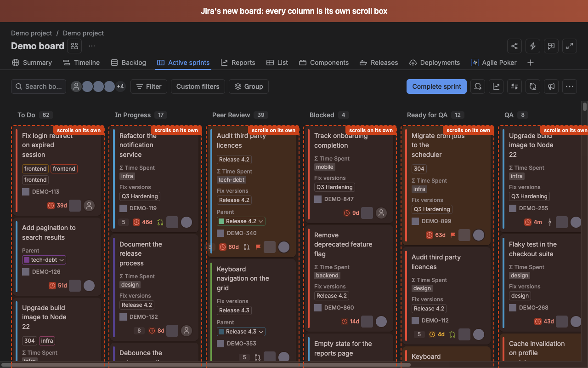
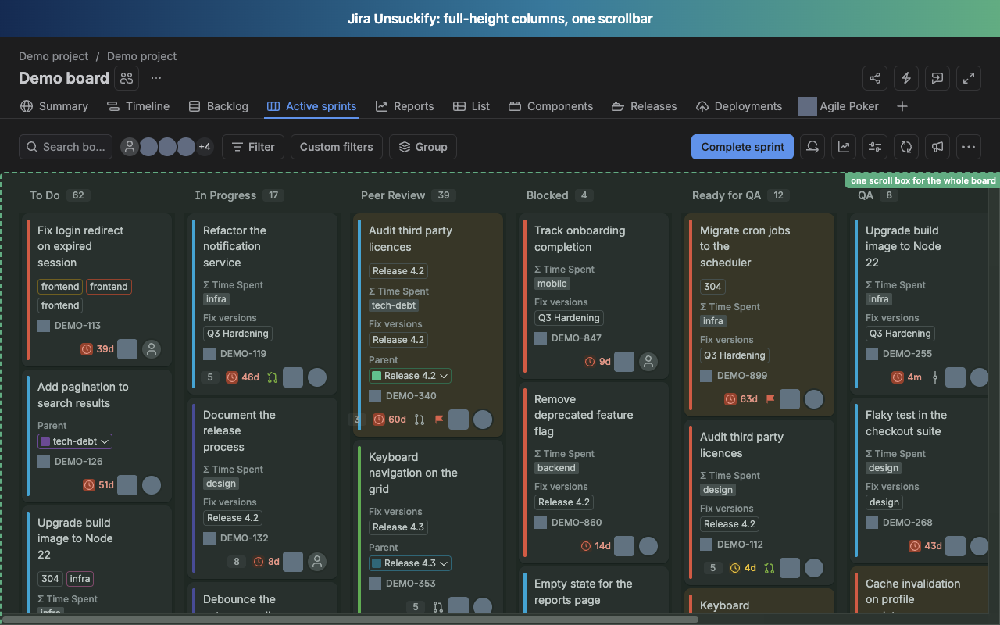

A Chrome extension that gives you back the old Jira board scrolling.
Jira's new board turns every column into its own scroll box.
One tiny scrollbar per column. You cannot see a whole column at once, and
dragging a card to a column further down means scrolling two things at
the same time. There is no Jira setting to turn this off.
This turns it off.
- Every column grows to its full height
- The board gets one scrollbar instead of one per column
- Column headers stay on screen while you scroll
- Horizontal scrolling still works
- Jira's top bar, sidebar and project tabs stay exactly where they are
- Works with swimlanes
Cards keep loading as you scroll, the same way they always did. Drag and drop still works, including dragging to a column below the fold.
- Manifest V3
- No network requests
- No analytics
- No remote code
- No build step
What it looks like


What it does not touch
Backlog, timeline, reports, list and summary pages. Old-style boards. Anything that is not the new board. On those pages the extension does nothing at all.
Built to fail safely
Jira is a React app and it changes. Before this extension restyles
anything, it checks that every element it needs is actually there. If
Jira has moved something, the extension stays completely inactive rather
than leaving your board half broken, and the toolbar badge turns into a
red ! that names exactly what changed. You can paste a
corrected selector into the options page and carry on without waiting
for an update.
Privacy
Nothing is collected, nothing is sent anywhere, and no network requests are made at all. Read the full privacy policy.